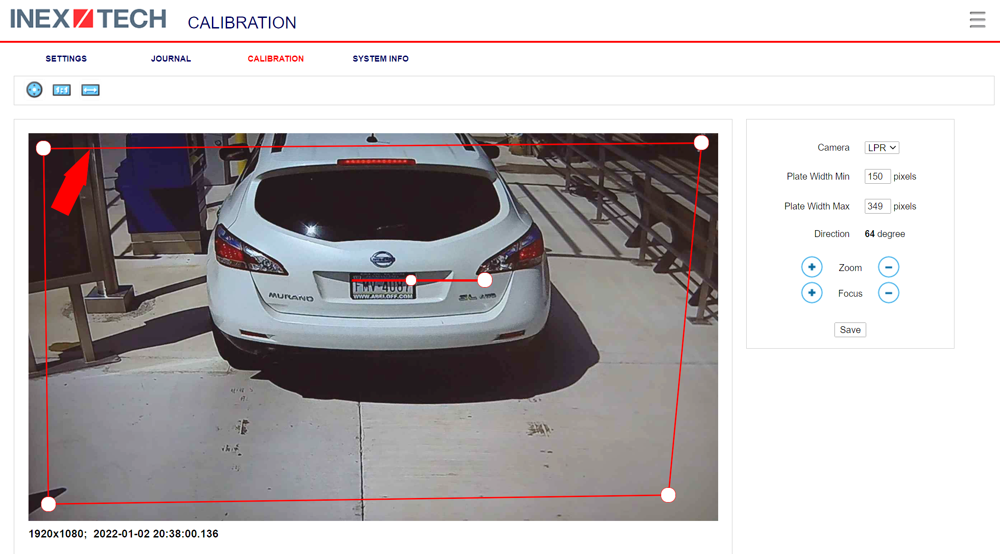

RoadView ALPR
User Guide
Release 1.x
Doc. No. RV-ALPR-MAN-001
- 1. About This Document
- 2. Glossary of Terms
- 3. System Requirements
- 4. Quick Overview of Steps
- 5. Preparation for Configuration
- 5.1. Connecting a Computer/Laptop to the Network
- 5.2. Reserving IP Addresses in your Network
- 5.3. Determining the IP Addresses of the Connected Cameras
- 5.4. Changing the IP Addresses of the Cameras
- 5.5. Determining the IP Address of the RoadView Computer with IZ Discovery
- 5.6. Changing the RoadView Computer’s IP Address and Network Settings
- 6. Logging In and Logging Out
- 7. Calibration Tab
- 8. Troubleshooting
- 9. Appendix A - Document Change History
1. About This Document
1.1. Who Should Read this Document
This document is for:
-
Technical personnel who want to install, configure, maintain and use RoadView ALPR in their ALPR systems
-
Project managers who want to understand RoadView ALPR’s capabilities
1.2. Recommended Reading/Related Documents
| Doc. No. | Title | Doc. Version |
|---|---|---|
RoadView ALPR Release Notes (for Release rrr) |
Latest |
|
RoadView Video Analytics Technical Data Sheet |
Latest |
|
IZIO Digital IO Controller Installation and User Guide |
1.xx |
|
ADAM (IZIO) P2P Configuration |
Latest |
|
IZ-REM-RELAY Remote (Web) Relays Series: Data Sheet and supporting documentation |
Latest |
|
IZ Discovery Utility software components |
Latest |
|
ZAP: INEX Technologies Application Protocol, Version 4.5 |
1.xx |
|
INEX HTTP API for Major Version "M", Release "x.y"; document version W |
Latest for HTTP release being used |
|
IZMonitoring Server: Camera Monitoring API |
Latest |
|
IZMonitoring Server API |
Latest |
|
IZCentral User Guide |
3.xx |
|
Software End User License Agreement (includes list of open source software) |
4.xx |
|
INEX ALPR Installation for AMANO |
Latest |
|
INEX IZCloud Integration |
Latest |
|
INEX TIBA Integration |
Latest |
1.3. Applicability
This document is applicable to RoadView ALPR software, release 1.15.64 and above.
1.4. Support
Contact our support team via our website: http://www.INEXtechnologies.com
2. Glossary of Terms
| Term | Explanation |
|---|---|
ALPR |
Automatic License Plate Recognition |
DHCP |
Dynamic Host Configuration Protocol. A DHCP server assigns a unique Internet Protocol (IP) address to each device connected to a network. |
DPU |
DPU is a generic term for INEX/TECH Data Processing Units. RoadView software can run on INEX/TECH DPUs with graphic processors, or on ALPR All-in-one Camera Systems with built-in processors. |
IZ |
INEX/ZAMIR (former company name; now called INEX Technologies, also called INEX/TECH) |
IZ ALPR system |
An Automatic License Plate Recognition system utilizing cameras and RoadView software. The IZ ALPR system can capture LPR Events, and transmit them to other systems such as IZCentral. |
IZCentral |
Server software that communicates with one or more IZ ALPR systems. IZCentral provides a central repository for all LPR Events generated by the RoadView(s). IZCentral can also interface with many 3rd party systems via their proprietary protocols. |
LPR Event |
The identified occurrence of a passing vehicle by the IZ ALPR System. An LPR Event includes metadata (location, lane identifiers, timestamp, the identified license plate number, recognition confidence, and more), plus a set of related images; typically, an Overview image, an LPR camera image and an image of the license plate. Also called a Vehicle Event or Event. An Event may include images from more than one camera in the same Lane. |
RoadView |
The software responsible for capturing LPR Events, and transmitting them to other systems. |
.NET |
Software framework that runs primarily on Microsoft Windows. See also WCF. |
NIC |
Network Interface Card |
RTSP |
Real Time Streaming Protocol. A network protocol designed to control streaming media servers. |
Trigger |
A command sent to an IZ ALPR system to create an LPR Event. Trigger sources can be from hardware signals, generated by software, or sent by a 3rd party system via various protocols. |
WCF |
Windows Communication Foundation. A Microsoft class library that is included with the .NET Framework. See also .NET. |
ZAP |
Zamir Application Protocol - Proprietary INEX Technologies protocol for interfacing with an IZ ALPR system and IZCentral. |
3. System Requirements
You will need to provide a laptop computer to use for configuration. If you will be using the laptop outdoors, the screen must be able to be seen in strong sunlight. Required software:
-
Windows 10 or above - with .NET 4.5 enabled in "Windows Features"
-
Internet Explorer browser version 11 or higher, or the latest version of Chrome
|
You can add an IE Tab extension to Chrome at this link (to enable access to the Flexwatch camera configuration application): |
4. Quick Overview of Steps
-
Reserve IP addresses for the components in your ALPR system - RoadView computer(s) and camera(s) - see Section 5.2, “Reserving IP Addresses in your Network” .
-
Use IZ Discovery to find the initial IP Addresses of the cameras connected to your network - see Section 5.3, “Determining the IP Addresses of the Connected Cameras” .
-
Log into each camera, and change its IP address according to the requirements of your network. Use fixed addresses. Record these new addresses for use in RoadView configuration. See Section 5.4, “Changing the IP Addresses of the Cameras” .
5. Preparation for Configuration
5.1. Connecting a Computer/Laptop to the Network

Connect your laptop to the same network switch the computer running RoadView is connected to.
5.2. Reserving IP Addresses in your Network
The INEX cameras have been pre-configured with default IP addresses. You will probably need to change these addresses to conform to the requirements of your network. Be sure that you have IP addresses reserved for all components of your ALPR system (RoadView computer and cameras).
5.3. Determining the IP Addresses of the Connected Cameras
See your camera’s Installation Guide for an explanation of how to determine the initial IP addresses of cameras on your network (using IZ Discovery). You will need this information to log into the cameras, and to change the cameras' IP addresses.
5.4. Changing the IP Addresses of the Cameras
See your camera’s Installation Guide for an explanation of how to log in to a camera, and how to edit its IP address (fixed addresses are highly recommended). Record the new addresses; you will need them to configure the RoadView software.
5.5. Determining the IP Address of the RoadView Computer with IZ Discovery
The IZ Discovery utility discovers all active devices connected to the network, and displays a list of their network parameters. These devices can include cameras and computers.
|
If any device on your network is connected via wireless, IZ Discovery will not recognize the device. In addition, if the computer running IZ Discovery is connected via wireless, you will not see any devices displayed. |
-
Download the IZ Discovery software (see Section 1.2, “Recommended Reading/Related Documents”)
-
Run IZ Discovery
-
When IZ Discovery first runs, you may see a Windows security warning. If so, click Run.
-
If you see a message related to the Windows firewall, click Allow.
-
IZ Discovery will start and display a list of devices on the network, according to their serial numbers (see Figure 2, “IZ Discovery Utility”).
-
Scroll down to find the device you are interested in. You can double-click to view/edit a specific device’s IP address parameters (see Section 5.6, “Changing the RoadView Computer’s IP Address and Network Settings”).
-
Click Clear List to refresh the discovery process.
 Figure 2. IZ Discovery Utility
Figure 2. IZ Discovery Utility
-
-
If IZ Discovery does not recognize a device:
-
Press the device’s reset button (if available)
-
Reset the device by shutting off power/removing the LAN cable, waiting 5 seconds, and reapplying power
-
Check the LAN cable connected between your laptop and the network, and the LAN cable connected between the device and the LAN switch. Replace the cable(s) and try to run IZ Discovery again.
-
5.6. Changing the RoadView Computer’s IP Address and Network Settings
|
The device’s IP Address cannot be set to 10.10.2.xx or 10.10.3.xx It is highly recommended to use a fixed IP address (not DHCP). A fixed IP address enables you to access the computer using the same URL every time, even after unexpected power outages A dynamic IP address may change upon device reboot. Before opening the web interface, you will have to find the current IP address of the device using IZ Discovery. If you want to copy the IP address (for login to the device) you will need to uncheck the DHCP checkbox momentarily to make the address field accessible. |
To change the device’s mode (fixed or dynamic [DHCP]), or IP address:
-
Select the relevant line in the list of devices and double-click on it.
-
The Network Settings window appears
-
To change the mode:
-
Check or uncheck the DHCP box
-
Click Save
-
-
To change the IP address:
-
Verify that the address is not used by any other device on the network
-
Be sure to uncheck the DHCP box
-
Enter the network address parameters
-
Write down the new IP Address and click Save
-
-
The change should be reflected in the main dialog. This can take about a minute until the IP is obtained. If you do not see the change after this time, close IZ Discovery, and then reopen it.
-
Verify that the IP address parameters have been changed to the ones you wanted. If not, you will have to log into the device (see Section 6, “Logging In and Logging Out”) and change the IP address.
6. Logging In and Logging Out
6.1. Logging Out (Multi-line Menu Icon)
-
Click on the multi-line menu icon at the upper right of the RoadView screen
-
Select "Logout"

|
The Network Settings refer to the RoadView computer (Camera System or DPU) - NOT the computer on which the browser displaying the GUI is running. It is highly recommended to use a fixed IP address (not DHCP). A fixed IP address enables you to access the computer using the same URL every time, even after unexpected power outages. |
6.2. Date and Time Settings
|
The Date and Time Settings refer to the location of the RoadView computer (Camera System or DPU) - NOT the computer on which the browser displaying the GUI is running. The Time Zone selections are organized by continent. For example, the "America/" prefix covers various cities and countries in North America (U.S. and Canada) and South America. |
-
Set Time (Automatically/Manually)
-
If Automatic, the date and time will be updated from a central Network Time server. Select the appropriate server, and the interval at which you want RoadView to poll for the date and time (selected from the Polling Interval dropdown).
-
Click the "Update Now" button to update the date and time immediately.
-
The icon (green check mark or red "x") indicates if the URL of the NTP server is correct, and the connection to it was successful.
-
-
If Manual, click in the Date and Time box to display a calendar/time popup. You should also select a Time Zone; set it to the local time at the location in which the Camera System/DPU is installed (not the UTC default).
-
-
Remember to click the Save button at the end of this section after making changes.
6.3. ZAP Integration

|
RoadView can send Events via HTTP, and act as both a ZAP Server and ZAP Client - all simultaneously. |
-
ZAP Server - Check the box to have RoadView act as a ZAP Server, to which ZAP Clients can connect (see the ZAP Protocol document for details):
-
Ports - Each Lane configured in RoadView will automatically have its own row in the table. Each Lane should have a different port number.
-
ZAP Version - ZAP communication protocol version. It is recommended to use version 4.4. The connected clients must use the same version.
-
Confidence Filter - the confidence level below which Events are not sent
-
Keep Time (seconds) - how long a Capture message is to be left in memory before it will be deleted (if a Keep message is not received)
-
Offline Enabled - check this box to enable the ZAP offline queue
-
FTP Enabled (for ZAP Server) - when a client is connected to RoadView via ZAP, images can be sent to the client via FTP if this checkbox is checked.
-
FTP Server - the IP address of the FTP server
-
FTP Port - the port on the FTP server listening for FTP messages
-
FTP Folder - the folder path on the FTP server where the images will be stored
-
FTP User - the username used to access the FTP server
-
FTP Password - the password used to access the FTP server
-
FTP Keep Alive Rate (seconds) - time (in seconds) between attempts to check that the connection with the FTP server is still alive
-
-
-
ZAP Client - Check the box to have RoadView act as a ZAP Client, which will connect to a ZAP Server (see the ZAP Protocol document for details).
If you want RoadView to work with IZCentral, RoadView can only be working as a ZAP Client. In this mode, the RoadView ZAP Client port must match the IZCentral ZAP port (see the IZCentral documentation - see Section 1.2, “Recommended Reading/Related Documents”)-
IP - The IP address of the ZAP Server (to which RoadView acting as a client should connect)
-
Port - The port number of the ZAP Server
-
ZAP Version - ZAP communication protocol version. It is recommended to use version 4.4. The server being connected to must use the same version.
-
Confidence Filter - the confidence level below which Events are not sent
-
Keep Time (seconds) - how long a Capture message is to be left in memory before it will be deleted (if a Keep message is not received)
-
Offline Enabled - check this box to enable the ZAP offline queue
-
FTP Enabled (for ZAP Client) - when RoadView is connected to a ZAP server, images can be sent to the server via FTP if this checkbox is checked. (See the FTP Server items for the definition of the additional FTP parameters.)
-
-
Remember to click the Save button under the Detection Configuration section after changing these parameters.
7. Calibration Tab

-
When you see a vehicle at a typical capture position on the video, click on the video to pause it.
-
It is recommended to use the view called "Draw image by maintaining aspect ratio (two-headed arrow)". You select this view by clicking on the right-most button at the upper left of the screen: 
-
Select a camera from the dropdown list (LPR or OV).
-
The Frame Width (horizontal) and Frame Height (vertical) are displayed at the lower left, and are set automatically according to the Camera’s hardware configuration. See your Camera’s Installation and Calibration Guide.
-
The Frame Timestamp at the lower left displays the date and time that the image is being taken/was taken by the camera.
-
Aim the camera using the mounting bracket’s adjustment hardware (see Figure 8, “Pan/Tilt/Roll (Angle) Adjustments”).
-
Pan: Adjust the Pan so that the image of the license plate is in the horizontal middle of the Field of View.
-
Tilt: Adjust the Tilt so that the image of every expected plate position (depending on the vehicle type, such as passenger cars, jeeps, trucks, etc.) will be in the middle of the screen (from top to bottom).
-
Roll: Adjust the Roll so the license plate’s image is horizontally straight, parallel to the ground (not tilted to one side).
 Figure 8. Pan/Tilt/Roll (Angle) Adjustments
Figure 8. Pan/Tilt/Roll (Angle) Adjustments
-
-
When the correct position is achieved, make a preliminary tightening of the mounting screws.
-
Define the Region of Interest (ROI) by dragging on the corners (vertices) of the trapezoidal region. For optimum recognition accuracy, the ROI should be large enough to capture the region where plates could be found in images.
The following settings for the LPR and OV cameras are saved separately. For example, you may want a Region of Interest that is different for each camera.
-
Define the Plate Width Min: Events will only be created for plate reads whose width is greater than or equal to this parameter. It is recommended to enter 150 in the Plate Width Min text box.
This parameter can also be configured by dragging the small circle on the horizontal line on the Calibration tab (expressed in pixels).
This parameter can be used to ignore small plate reads. For example, if the image was taken when a vehicle is too far away, the characters are too small to be read - even by a human. -
Define the Plate Width Max: Events will only be created for plate reads whose width is less than or equal to this parameter. It is recommended to enter approximately 350 in the Plate Width Max text box.
This parameter can also be configured by dragging the large circle on the horizontal line on the Calibration tab (expressed in pixels).
This parameter can be used to prevent false reads, such as large numbers on trucks. -
Use the zoom and focus buttons to adjust the view of the video until the width of the plate is 150 pixels, and its plate image is clear and sharp. (The surrounding items, such as the vehicle body, do not need to be as sharp as the plate.)
There is a delay between a click of a zoom/focus button and when you see the effect on the screen. Be sure to wait until you see the change on the screen before clicking the button again. Clicking the button multiple times will cause you to "overshoot" the desired zoom/focus.
As you adjust the zoom and focus, you may need to reposition the camera in order to get the image of the plate back to the desired position.
-
Direction (red arrow on video): drag the head of the arrow around to point to the angle at which you expect vehicles to be moving. (The vehicle’s direction is also sent to the IZCloud as part of an Event.) You can add a Direction column to the Live tab using the multi-line menu at the upper right of the screen.
You can set the "Ignore Opposite Direction" parameter in the Lanes section to ignore all Events for vehicles moving in the direction opposite to the direction arrow in the Calibration tab -
When you have finished, click the Save button. Wait several seconds for the display to refresh automatically, which indicates that the RoadView recognition software is running again with the updated parameters.
-
When the correct position is achieved, make a final tightening of the mounting hardware.
-
Repeat these steps for the other camera.
8. Troubleshooting
|
For details about items in the following list related to hardware or configuration, see your camera’s Installation and Calibration Guide. |
| Symptom | Possible Solution |
|---|---|
Thumbnails in Settings tab, in the Camera section at bottom have been replaced by red exclamation points and/or |
|
Recognition rates are low |
Examine the video from the Camera on the Calibration tab:
|
9. Appendix A - Document Change History
| Version | Date | Change |
|---|---|---|
1.00 |
Aug. 25, 2020 |
Initial version |
1.10 |
Sep. 13, 2020 |
Version for Release 1.7. Changes from Release 1.6 are:
|
1.20 |
Dec. 6, 2020 |
Version for Release 1.9. Changes from Release 1.7 are:
|
1.25 |
Jan. 11, 2021 |
Updates for software version 1.9.13:
|
1.30 |
Mar. 3, 2021 |
Updates for software version 1.9.25
|
1.31 |
Mar. 11, 2021 |
|
1.40 |
Apr. 19, 2021 |
|
1.41 |
Apr. 29, 2021 |
|
1.45 |
May 27, 2021 |
Updates for version 1.13.13 of the software:
|
1.46 |
June 1, 2021 |
|
1.47 |
June 13, 2021 |
Updates for latest production software release - 1.13.17:
|
1.48 |
July 13, 2021 |
|
1.50 |
Jan. 9, 2022 |
Updates for latest production software release - 1.15.59; changes from 1.13.17 include:
|
1.51 |
Jan. 11, 2022 |
|
1.52 |
Jan. 23, 2022 |
|
1.60 |
Oct. 27, 2022 |
|
1.61 |
Oct. 30, 2022 |
|
1.65 |
Feb. 7, 2023 |
Updates for releases 1.15.64.32 to 1.15.64.48:
|
1.66 |
Feb. 21, 2023 |
Updates for release 1.15.64.54:
|
1.67 |
Mar. 23, 2023 |
|
1.68 |
Apr. 16, 2023 |
|
1.69 |
Apr. 16, 2023 |
|
1.70 |
May. 17, 2023 |
|
--- |
--- |
|